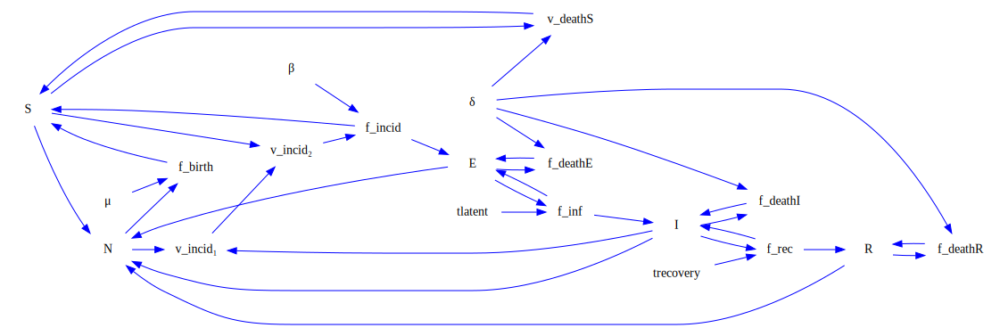

using GraphViz
using StockFlow
using StockFlow.Syntax
seir = @stock_and_flow begin
:stocks
S
E
I
R
:parameters
μ
β
tlatent
trecovery
δ
:dynamic_variables
v_birth = μ * N
v_incid₁ = I / N
v_incid₂ = S * v_incid₁
v_incid₃ = β * v_incid₂
v_inf = E / tlatent
v_rec = I / trecovery
v_deathS = S * δ
v_deathE = E * δ
v_deathI = I * δ
v_deathR = R * δ
:flows
CLOUD => f_birth(v_birth) => S
S => f_incid(v_incid₃) => E
S => v_deathS(v_deathS) => CLOUD
E => f_inf(v_inf) => I
E => f_deathE(v_deathE) => CLOUD
I => f_rec(v_rec) => R
I => f_deathI(v_deathI) => CLOUD
R => f_deathR(v_deathR) => CLOUD
:sums
N = [S,E,I,R]
end
GraphF(seir)
seir_causalLoop = convertToCausalLoop(seir)
Graph(seir_causalLoop)
